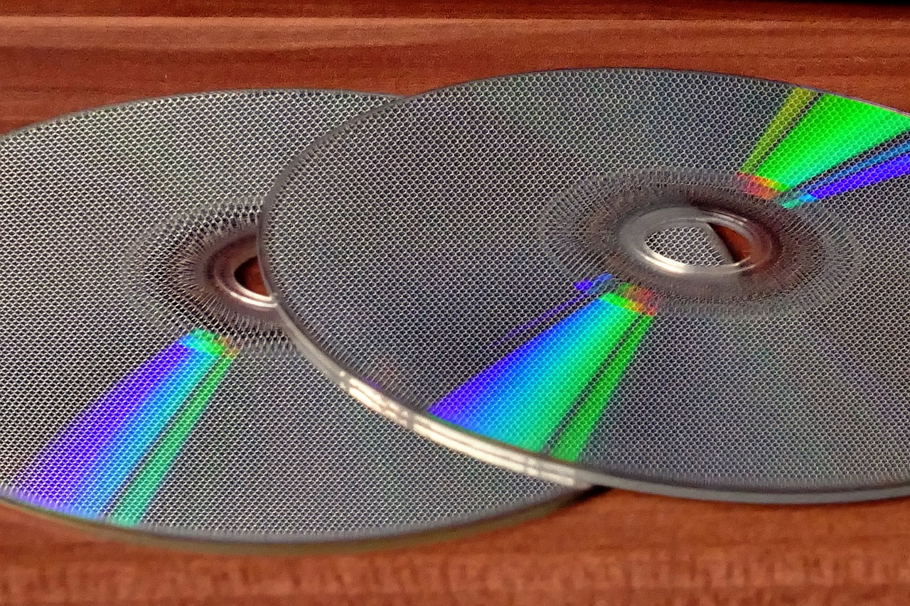

アイドルのCDには複数の形態があり、またCD購入特典もあるため 同じCDを何枚も買うファンが多い。
CDs often come with lottery tickets which attached the attendance of an event where the fan can meet the idol in person, and fans will buy multiple CDs in the hope of winning the lottery.
SnowMan 4th Album「RAYS」
プラスチックから紙に Plastic to Paper 日本の音楽市場はどれくらい活発なのか？ How active is Japan's music market?日本の音楽市場はどれくらい活発なのか？ How active is Japan's music market?日本の音楽市場はどれくらい活発なのか？ How active is Japan's music market?日本の音楽市場はどれくらい活発なのか？ How active is Japan's music market?
日向坂46 君はハニーデュー
特典あり Purchase Benefits 日本の音楽市場はどれくらい活発なのか？ How active is Japan's music market?日本の音楽市場はどれくらい活発なのか？ How active is Japan's music market?日本の音楽市場はどれくらい活発なのか？ How active is Japan's music market?日本の音楽市場はどれくらい活発なのか？ How active is Japan's music market?
INI THE FLAME
特典あり Purchase Benefits 日本の音楽市場はどれくらい活発なのか？ How active is Japan's music market?日本の音楽市場はどれくらい活発なのか？ How active is Japan's music market?日本の音楽市場はどれくらい活発なのか？ How active is Japan's music market?日本の音楽市場はどれくらい活発なのか？ How active is Japan's music market?